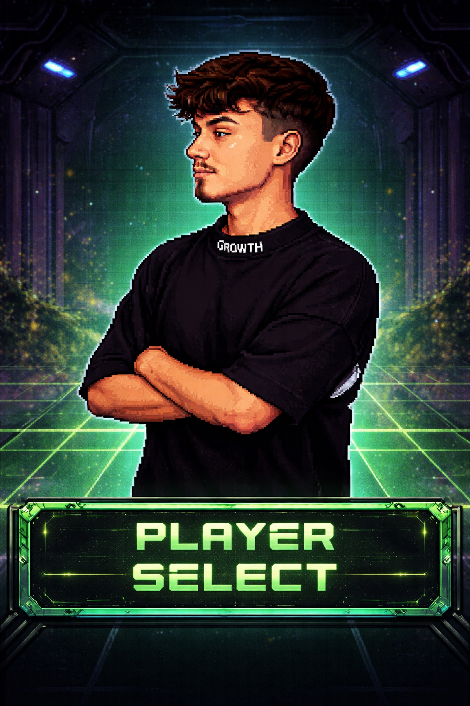

Desenvolvedor Front-end e Back-end, formado técnico em Desenvolvimento de Sistemas pelo SENAI, com conclusão em 2026.
Além do desenvolvimento do jogo Zona Contaminada, também foi responsável pela criação de uma plataforma digital para a agência B-Look, com foco em presença online e soluções modernas.
CONHECER PROJETO B-LOOK